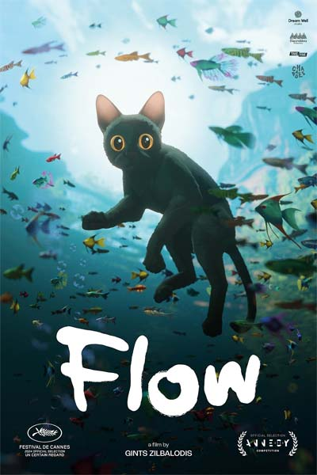

Movie
Video
Game
Anime / Kids
Flow

- Director : Gints Zilbalodis
- Release Date : Aug 28 2024
- Genre : Animation, Adventure, Family, Fantasy
- Time : 84
- Language : None
- Rating : IMDB8 rating by 6831 users
- Appropriate for : PG
StorylineCat is a solitary animal, but as its home is devastated by a great flood, he finds refuge on a boat populated by various species, and will have to team up with them despite their differences.
The world seems to be coming to an end, teeming with the vestiges of a human presence. Cat is a solitary animal, but as its home is devastated by a great flood, he finds refuge on a boat populated by various species, and will have to team up with them despite their differences.
In the lonesome boat sailing through mystical overflowed landscapes, they navigate the challenges and dangers of adapting to this new world.—Charades
Download links
click here